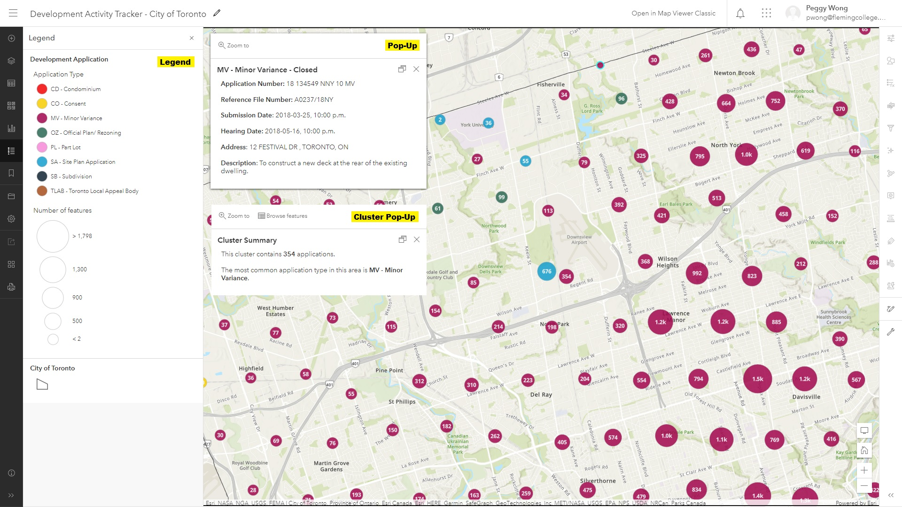
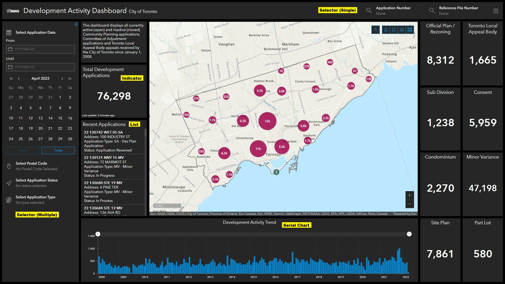
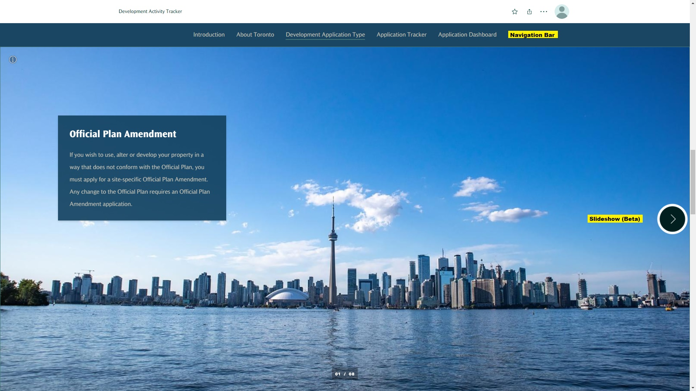

Methodology
In order to visualize the development activities in the City of Toronto, ArcGIS Web Map, ArcGIS Dashboards, ArcGIS Experience Builder, and ArcGIS StoryMaps were ultilized.
Data Pre-Processing
The Development Applications dataset (.csv) and the city boundary (.shp) can be downloaded from the City of Toronto Open Data Portal. As the development application dataset has the X and Y coordinates in MTM projection, it was converted to latitude and longitude using the XY Table to Point tool in ArcGIS Pro. After creating the point features for the development application, the data was published to ArcGIS Online as hosted feature layers.
ArcGIS Web Map
The main component of this project is the web map created through ArcGIS Online, which is the basis of the other web solutions. After downloading the Development Applications dataset (.csv) and the city boundary (.shp) from the City of Toronto Open Data Portal, the data was added to the ArcGIS Online and published as hosted feature layers. The hosted feature layers were then added to the web map, and several features have been configured in order to visualize the locations of development activity.
• Base map is set to Topographic to emphasize the locations of the development activity while showing the context such as neighbourhood and street names.
• Legend is displayed to help the users to understand the symbology of the application type, the number of features, and the city boundary.
• Symbology is set for both the development application and the city boundary. A color palette with low transparency is used to visualize different development application types, and a dark grey solid line is used to visualize the city boundary.
• Pop-ups are configured to show descriptive information about the individual applications effectively. Instead of using the original table showing all fields, the field attributes are utilized and only related information will be organized and displayed in the pop-ups.
• Clustering is an effective way to visualize high number of point features. The clustering radius is set to the maximum to minimize the number of clusters in the map. The size range of the clustering is set from 10% to 50% depends on the number of applications. Labels are added to display the number of applications in the area. Pop-ups are also configured to display the number of application and the most common application type in the area. The size of the cluster is based on the number of applications in the area, and the color of the cluster is based on the most common application type in the area.
ArcGIS Dashboards
To create an interactive dashboard and convey useful statistics to the users efficiently, several elements were utilized besides the embedded web map.
• Indicator displays the count of the applications in Toronto, or the count of the specific application type in the current map extent.
• List shows the recent applications that were submitted this month. The users can zoom the map to the corresponding application location by clicking on the specific application, and the corresponding pop-up will be displayed automatically as well.
• Serial Chart visualizes the monthly application volume since 2008 to show the development trend in Toronto. Its scroll bar allows the users to display the application volume in the specific date range.
• Selector (Single) in the header allows the users to select the specific application based on the application number or the reference file number. Once the application is selected, the users can zoom the map to the corresponding application location, and the corresponding pop-up will be displayed automatically as well.
• Selector (Multiple) in the collapsed sidebar allows the users to filter the applications based on the submission date range, postal code, application status, or application type. Only the applications that satisfy the search criteria will be displayed on the map.
All actions should be set only after all elements have been added to the dashboard, as the newly added elements will not be affected by the actions set previously.
ArcGIS Experience Builder
ArcGIS Experience Builder allows you to quickly transform your data into compelling web app. It is highly interactive that users are able to use search, filter, sort, export data and so many more. It is also mobile friendly, that the content can be displayed in either fixed or scrolling screens, on single or multiple pages. The built in map functions including basemap, zoom, navigation, scale bar, and full screen.
• Filter Filter allows you to select Development Applications by types. You can choose from CO, CD, MW, OZ, PL, SA, SB and TLAB, and hit apply.
• Search Search Applications by typing the Application Type, or Application ID.
• List List all the Application sorted by Application Types.
• Legend Allows you to see features in the map. It displays the symbols followed by Applycation Types. There are 3 legend layers, Application Type, Number of features, City of Toronto boundary. You can view different legend by clicking on the switch button.
• Map Display Toronto boundary by default.

ArcGIS StoryMaps
To tell a remarkable story about the development activities in Toronto, the ArcGIS StoryMaps is used. The main goal of the story map is to educate the public by providing background information about the map. The web map and the dashboard are embedded within the story map, so that the users can explore the development activities interactively within the story map. The unique elements of the story map include:
• Navigation Bar is pinned at the top of the story map, allowing the users to jump between different sections and obtain the information they want in a second.
• Video from YouTube is embedded in the story map in order to share more information about the development in Toronto. Embedded video is an effective way to tell a story and it keeps the users to stay on the story map longer.
• Slideshow (Beta) provides basic information about different development application types. The users can click through the slides to learn about different development application types, or skip to the next section if they are not interested.
• Button points the users to the City of Toronto website for more information about the development activities.
The navigation bar and the slideshow (beta) are shown in the screenshot below:
